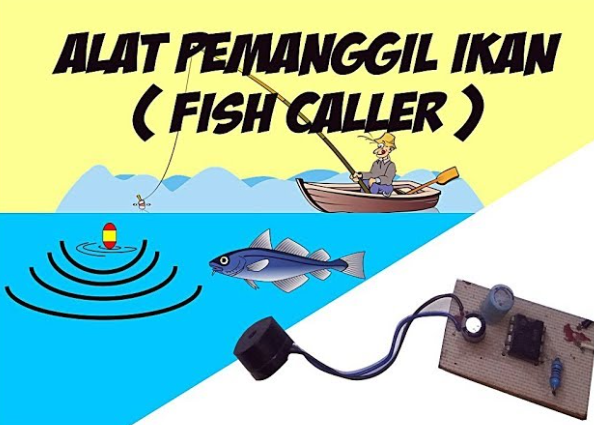

Pengantar Sistem Pesisir Tarakan
Sistem informasi pemantauan alat pemanggil ikan berbasis web untuk nelayan di Tarakan guna mendukung produktivitas sektor perikanan tangkap secara modern.
Sistem informasi pemantauan alat pemanggil ikan berbasis web untuk nelayan di Tarakan guna mendukung produktivitas sektor perikanan tangkap secara modern.


Memantau status aktif dan non-aktif perangkat di perairan secara real-time.

Memungkinkan pengoperasian alat pemanggil ikan dari posko pusat secara efisien.
Rekapitulasi data operasional perangkat untuk evaluasi tangkapan nelayan.
Kunjungi repository resmi untuk melihat pembaruan kode sumber proyek ini:

Silakan isi form di bawah ini untuk melaporkan kondisi perangkat atau menghubungi pengelola: